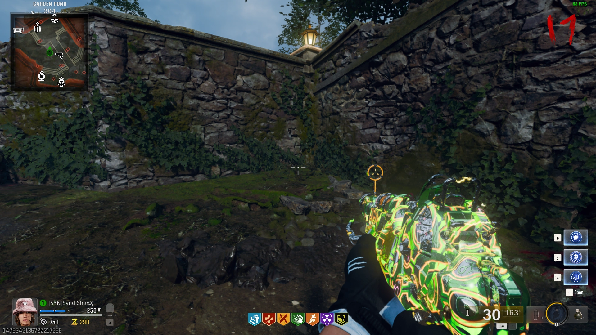
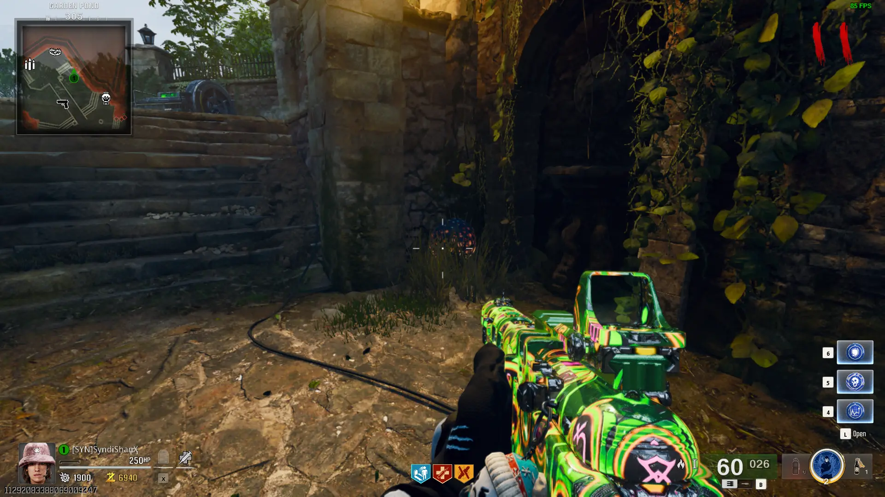
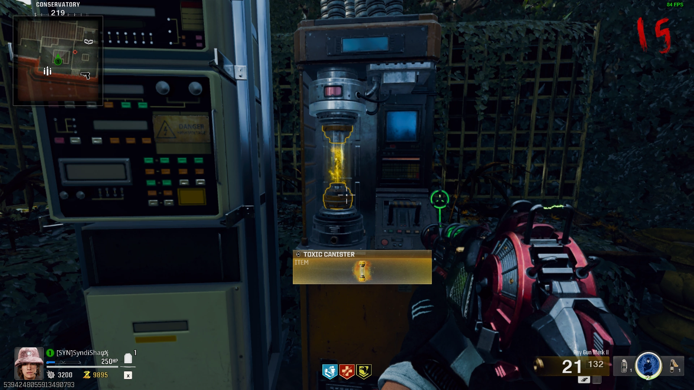

Easter Egg Song
Interact with 3 Bunny Headphones


Free Powerups
Shoot Powerup Items around the Map


After Shooting all of the Other Powerups a Fire Sale Powerup will Spawn
Free Perk
Unknown
Interact with the 4 Computers around the Map


Raygun Mark II
Obtain the Floppy Disk from the Lab Technician that Spawns in the Mainframe Chamber on Round 10
Insert the Floopy Disk into the Computer in the East Foyer, Kill the Vermin, and Find the 4-Letter Word in all Caps on the Printed Document


Go to the Nursery and convert the Word into Numbers by finding your letter in one of the groups and counting the number of letters in that group for each letter
 >
>
Type the Code into the Keypad next to the Quarantine Cell holding the Doppleghast to Unlock it, Kill the Doppleghast and pick up the Severed Arm

Go to the Ray Gun Mark II Locker in the Armory and Interact with the Panel Next to it to Unlock it
Canisters
Shoot the 4 Crystals around the Map with the Raygun Mark II until one Drop an Empty Canister, then Pick it Up


Throw a Kazimir Device near the Window under Double Tap and pick up an Empty Canister (You can get a free one from the Service Tunnels)


Explosive Canister
Place the Canister into the Yellow Machine at Shem's Henge
Interact with the Machine to Spawn an Abomination, have it Beam the 3 Small Rocks then Smash into them


Once all 3 Rocks are Glowing and Floating, the Pad will Start Siphoning from them, protect the Pad from the Vermin that Spawn
Once the Pad has Siphoned enough Energy you can pick up the Explosive Canister from the Machine
Place the Explosive Canister in the Workbench in the Service Tunnels to Upgrade the Ray Gun Mark II


Toxic Canister
Obtain 4 Seeds by Shooting the Purple Mushrooms around the Map with Napalm Burst or by using Explosives
 


Place the Canister into the Yellow Machine in the Conservatory

Place a Seed in all 4 Growing Chambers and Protect them from the Zombies that Spawn


Once all 4 Seeds have Grown you can pick up the Toxic Canister from the Machine
Place the Toxic Canister in the Workbench in Spawn to Upgrade the Ray Gun Mark II

Unknown Canister
Pick up Reflectors from Fountains around the Map


Main Quest
Elevator
Repair the Elevator using the Fuse from the Maintenance Worker and the Circuit Board from Richtofen's Server


Once you Repair the Elevator you can call it to Spawn some Zombies, Kill then and Call the Elevator again
Secret Distillery Room
Grab the Sconce from the Banquet Hall
Place the Sconce onto the Wall in the Grand Foyer and Play Simon Says with them

Secret Ritual Room
Obtain the Essence Bomb from a Breakable White Box around the Map


Place the Bomb on the Rubble in the Service Tunnels

Obtain a Ray Gun Mark II and Complete 3 Lockdowns around the Map by Interacting with Machines attached to Portaits


**PREPARE FOR THE BOSS FIGHT**
Interact with the T-Rex Skeleton to Start the Boss Fight
Interact with the Object to Trigger the Cutscene